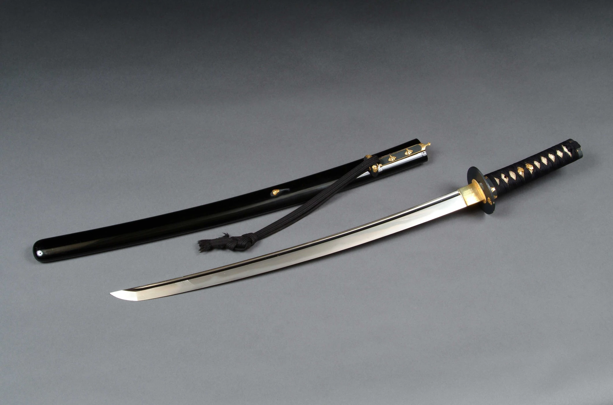

.png)
.png)
One of the most well-known katanas in Japanese history, the Honjo Masamune is renowned for its legendary position and illustrious past. The sword, which is regarded as a national treasure of Japan, is believed to have been passed down through samurai warrior families.
The Honjo Masamune was made by the renowned swordsman Goro Nyudo Masamune, who flourished in Japan's Kamakura period (1185–1333) and is named for him. Masamune was renowned for his talent in forging swords that were not only razor-sharp and powerful but also exquisitely crafted.
According to legend, the Honjo Masamune was produced in the latter half of the 13th century, during the Kamakura shogunate's rule. The ruthless daimyo (feudal lord) Honjo Shigenaga, who was renowned for his prowess in warfare and passion for excellent swords, was its first owner.
The sword was wielded by various well-known samurai warriors over the years and was passed down through the Honjo family for many generations. Tokugawa Ieyasu, the creator of the Tokugawa shogunate, and Matsudaira Katamori, a formidable daimyo of the Edo era, are reported to have taken it into combat.
The Honjo Masamune was deemed a national treasure and held by the Imperial family in Japan during the Meiji period (1868–1912). The sword was lost during World War II, and its whereabouts remained a mystery for many years.
The sword, which had been kept as a combat prize, was found in a Japanese American military base in 1978. The Honjo Masamune was successfully negotiated back to its country of origin by the Japanese government.
The Honjo Masamune is venerated as a representation of Japan's rich cultural legacy and is regarded as one of the greatest swords ever made in Japan. Sword lovers all over the world are still inspired by its gorgeous design and excellent craftsmanship, and its history serves as a reminder of the value of preserving our cultural treasures for future generations.